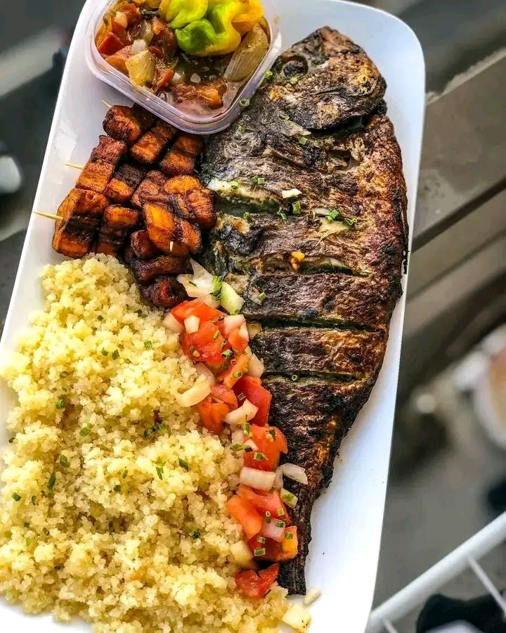

Attieke with Grilled Fish

Description
Attieke is the national dish of Cote d'Ivoire. It is fermented cassava semolina, steamed to perfection, offering a light, airy texture and a unique touch of acidity.
This very refreshing dish is traditionally served with well-seasoned grilled fish, a salad of diced tomatoes and fresh onions, all dressed with a drizzle of flavored oil and chili pepper.
Ingredients
- 500g of attieke (cassava semolina)
- 1 large whole fish (such as sea bream or tilapia)
- 2 fresh tomatoes and 2 onions
- 1 seasoning stock cube
- Fresh chili pepper or chili paste
- Frying oil, salt, and pepper
Steps
- Marinating the fish: Clean the fish, make incisions, and apply a mixture of salt, pepper, garlic, and stock cube.
- Preparing the attieke: Lightly moisten the cassava semolina with a little water, then steam it for 10 minutes. 15 minutes.
- Cook the fish: Grill the fish on the barbecue or fry it in a large pan of hot oil until crispy.
- Prepare the side dish: Dice the tomatoes and spring onions into small, even pieces to make the accompanying condiment.
- Plate: Serve the hot attieke with the grilled fish, top with the diced vegetables, and drizzle with a little of the cooking oil.
HOME